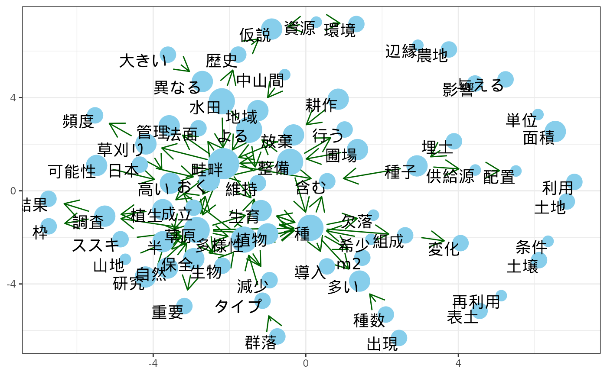
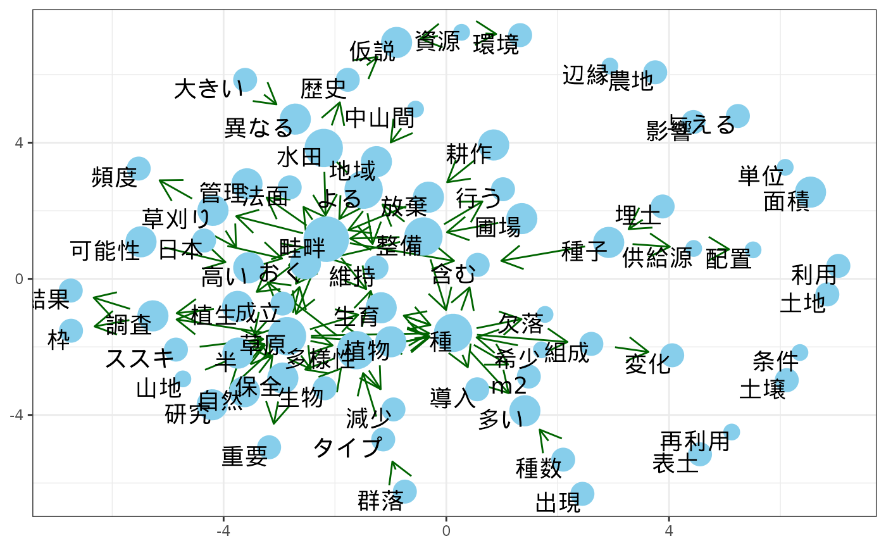

Draw bigram network using morphological analysis data.
Usage
draw_bigram_network(df, draw = TRUE, ...)
bigram(df, group = "sentence", depend = FALSE, term_depend = NULL, ...)
trigram(df, group = "sentence")
bigram_depend(df, group = "sentence")
bigram_network(bigram, rand_seed = 12, threshold = 100, ...)
word_freq(df, big_net, ...)
bigram_network_plot(
big_net,
freq,
...,
arrow_size = 5,
circle_size = 5,
text_size = 5,
font_family = "",
arrow_col = "darkgreen",
circle_col = "skyblue",
x_limits = NULL,
y_limits = NULL,
no_scale = FALSE
)Arguments
- df
A dataframe including result of morphological analysis.
- draw
A logical.
- ...
Extra arguments to internal functions.
- group
A string to specify sentence.
- depend
A logical.
- term_depend
A string of dependent terms column to use bigram.
- bigram
A result of bigram().
- rand_seed
A numeric.
- threshold
A numeric used as threshold for frequency of bigram.
- big_net
A result of bigram_network().
- freq
A numeric of word frequency in bigram_network. Can be got using word_freq().
- arrow_size, circle_size, text_size,
A numeric.
- font_family
A string.
- arrow_col, circle_col
A string to specify arrow and circle color in bigram network.
- x_limits, y_limits
A Pair of numeric to specify range.
- no_scale
A logical. FALSE: Not draw x and y axis.
Value
A list including df (input), bigram, freq (frequency) and gg (ggplot2 object of bigram network plot).
Examples
library(magrittr)
data(synonym)
synonym <- unescape_utf(synonym)
data(neko_mecab)
neko_mecab <-
neko_mecab |>
unescape_utf() |>
add_sentence_no() |>
clean_up(use_common_data = TRUE, synonym_df = synonym)
bigram_neko <-
neko_mecab |>
draw_bigram_network()
 add_stop_words <-
c("\\u3042\\u308b", "\\u3059\\u308b", "\\u3066\\u308b",
"\\u3044\\u308b","\\u306e", "\\u306a\\u308b", "\\u304a\\u308b",
"\\u3093", "\\u308c\\u308b", "*") |>
unescape_utf()
data(review_chamame)
bigram_review <-
review_chamame |>
unescape_utf() |>
add_sentence_no() |>
clean_up(add_stop_words = add_stop_words) |>
draw_bigram_network()
add_stop_words <-
c("\\u3042\\u308b", "\\u3059\\u308b", "\\u3066\\u308b",
"\\u3044\\u308b","\\u306e", "\\u306a\\u308b", "\\u304a\\u308b",
"\\u3093", "\\u308c\\u308b", "*") |>
unescape_utf()
data(review_chamame)
bigram_review <-
review_chamame |>
unescape_utf() |>
add_sentence_no() |>
clean_up(add_stop_words = add_stop_words) |>
draw_bigram_network()
 data(review_ginza)
review_ginza |>
unescape_utf() |>
add_sentence_no() |>
clean_up(add_depend = TRUE) |>
draw_bigram_network(depend = TRUE)
#> Joining with `by = join_by(係受元_id)`
data(review_ginza)
review_ginza |>
unescape_utf() |>
add_sentence_no() |>
clean_up(add_depend = TRUE) |>
draw_bigram_network(depend = TRUE)
#> Joining with `by = join_by(係受元_id)`
 #> $df
#> # A tibble: 7,164 × 20
#> text_id chap sect para id 表層形 原形 UD品詞タグ 品詞 品詞細分類1
#> <dbl> <dbl> <dbl> <dbl> <chr> <chr> <chr> <chr> <chr> <chr>
#> 1 1 1 1 1 1_1 農地 農地 NOUN 名詞 普通名詞
#> 2 1 1 1 1 1_3 農産物 農産物 NOUN 名詞 普通名詞
#> 3 1 1 1 1 1_5 生産 生産 VERB 名詞 普通名詞
#> 4 1 1 1 1 1_7 機能 機能 NOUN 名詞 普通名詞
#> 5 1 1 1 1 1_12 生物 生物 NOUN 名詞 普通名詞
#> 6 1 1 1 1 1_13 多様性 多様性 NOUN 名詞 普通名詞
#> 7 1 1 1 1 1_15 維持 維持 VERB 名詞 普通名詞
#> 8 1 1 1 1 1_17 機能 機能 NOUN 名詞 普通名詞
#> 9 1 1 1 1 1_19 有し 有する VERB 動詞 一般
#> 10 2 1 1 1 2_2 農地 農地 NOUN 名詞 普通名詞
#> # ℹ 7,154 more rows
#> # ℹ 10 more variables: 品詞細分類2 <chr>, 属性 <chr>, 係受元 <chr>,
#> # 係受タグ <chr>, 係受ペア <chr>, その他 <chr>, sentence <dbl>,
#> # word_no <chr>, 係受元_id <chr>, 原形_dep <chr>
#>
#> $bigram
#> # A tibble: 6,375 × 3
#> word_1 word_2 freq
#> <chr> <chr> <int>
#> 1 畦畔 草原 86
#> 2 種 多様性 56
#> 3 圃場 整備 42
#> 4 自然 草原 36
#> 5 半 自然 35
#> 6 半 草原 28
#> 7 多様性 高い 24
#> 8 整備 畦畔 24
#> 9 耕作 放棄 22
#> 10 水田 畦畔 20
#> # ℹ 6,365 more rows
#>
#> $freq
#> [1] 12 10 8 8 8 10 10 8 10 8 6 10 6 6 6 8 6 8 8 4 6 8 4 8 6
#> [26] 8 8 6 6 4 10 4 8 4 6 6 4 8 6 6 6 6 6 6 8 6 6 6 6 6
#> [51] 6 6 8 8 6 8 6 8 4 6 8 4 6 4 6 4 8 6 6 8 6 4
#>
#> $gg

#>
#> $df
#> # A tibble: 7,164 × 20
#> text_id chap sect para id 表層形 原形 UD品詞タグ 品詞 品詞細分類1
#> <dbl> <dbl> <dbl> <dbl> <chr> <chr> <chr> <chr> <chr> <chr>
#> 1 1 1 1 1 1_1 農地 農地 NOUN 名詞 普通名詞
#> 2 1 1 1 1 1_3 農産物 農産物 NOUN 名詞 普通名詞
#> 3 1 1 1 1 1_5 生産 生産 VERB 名詞 普通名詞
#> 4 1 1 1 1 1_7 機能 機能 NOUN 名詞 普通名詞
#> 5 1 1 1 1 1_12 生物 生物 NOUN 名詞 普通名詞
#> 6 1 1 1 1 1_13 多様性 多様性 NOUN 名詞 普通名詞
#> 7 1 1 1 1 1_15 維持 維持 VERB 名詞 普通名詞
#> 8 1 1 1 1 1_17 機能 機能 NOUN 名詞 普通名詞
#> 9 1 1 1 1 1_19 有し 有する VERB 動詞 一般
#> 10 2 1 1 1 2_2 農地 農地 NOUN 名詞 普通名詞
#> # ℹ 7,154 more rows
#> # ℹ 10 more variables: 品詞細分類2 <chr>, 属性 <chr>, 係受元 <chr>,
#> # 係受タグ <chr>, 係受ペア <chr>, その他 <chr>, sentence <dbl>,
#> # word_no <chr>, 係受元_id <chr>, 原形_dep <chr>
#>
#> $bigram
#> # A tibble: 6,375 × 3
#> word_1 word_2 freq
#> <chr> <chr> <int>
#> 1 畦畔 草原 86
#> 2 種 多様性 56
#> 3 圃場 整備 42
#> 4 自然 草原 36
#> 5 半 自然 35
#> 6 半 草原 28
#> 7 多様性 高い 24
#> 8 整備 畦畔 24
#> 9 耕作 放棄 22
#> 10 水田 畦畔 20
#> # ℹ 6,365 more rows
#>
#> $freq
#> [1] 12 10 8 8 8 10 10 8 10 8 6 10 6 6 6 8 6 8 8 4 6 8 4 8 6
#> [26] 8 8 6 6 4 10 4 8 4 6 6 4 8 6 6 6 6 6 6 8 6 6 6 6 6
#> [51] 6 6 8 8 6 8 6 8 4 6 8 4 6 4 6 4 8 6 6 8 6 4
#>
#> $gg

#>